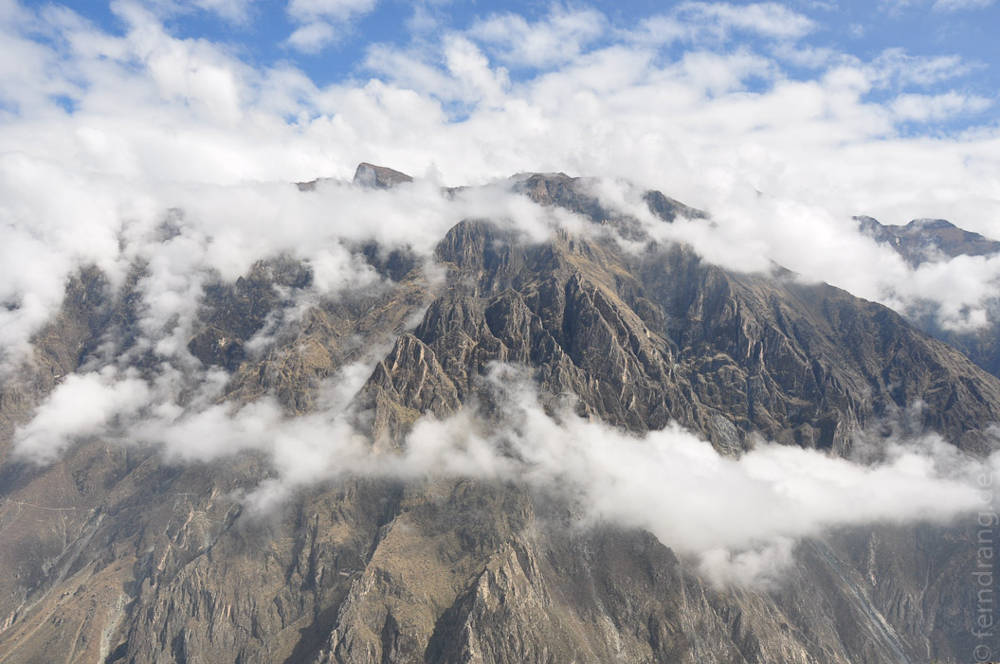
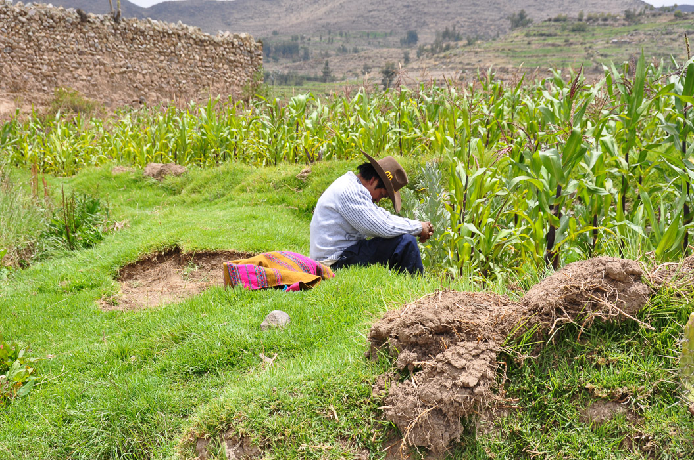
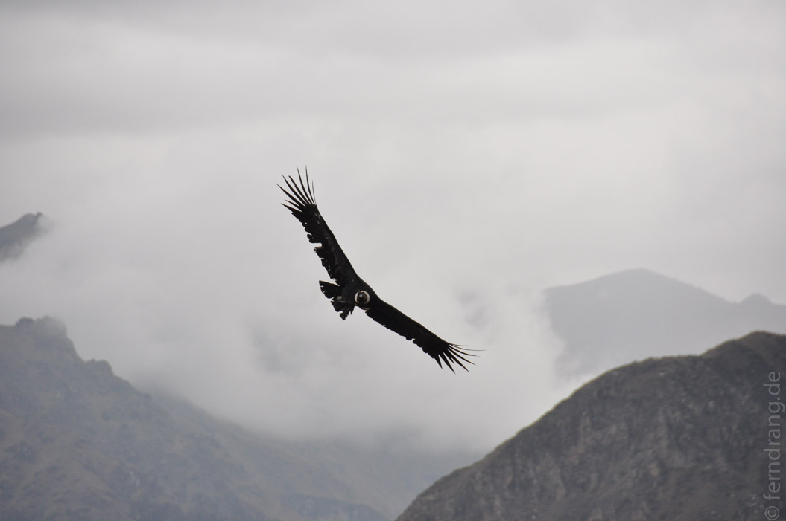
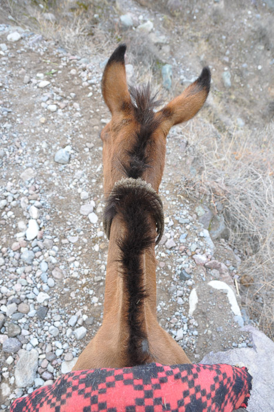
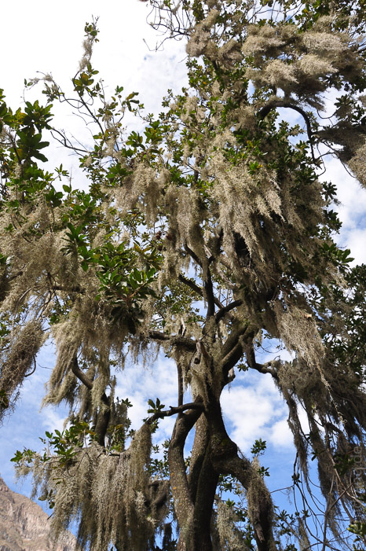
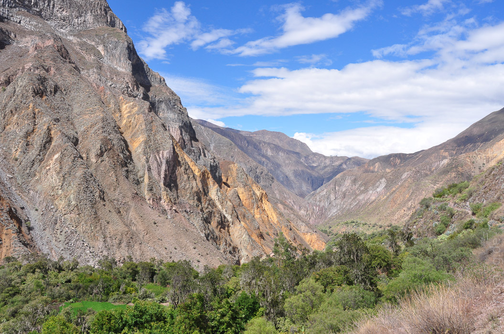
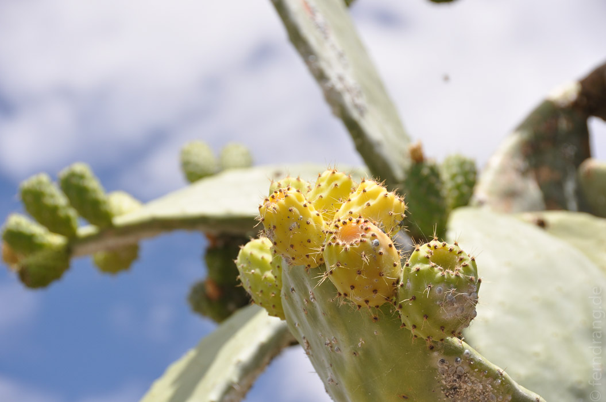

Frohes Neues Jahr!
Wir konnten leider nicht ins Neue Jahr hinein feiern, da wir es um vier Uhr morgens mit einer dreitägigen Wandertour begonnen haben. Während noch die Silvesterleichen durch die Gassen torkelten, sind wir in den Cañon de Colca aufgebrochen. Das Tal ist eines der tiefsten der Welt, womit Peru einen weiteren Rekord einsammelt. Vom Colca-Flüsschen bis zu den Berggipfeln sind es teils über 4000m.
Nach der obligatorischen Fahrt durch das Niemandsland, das Arequipa umgibt, haben wir nach Stunden den Cañon erreicht. Im unteren Bereich ist es noch grün und fruchtbar, während es an den Hängen immer karger und später auch verschneit wird. Der erste Stopp war das Cruz del Condor - ein Aussichtspunkt, von dem aus man Kondore beobachten kann. Wir haben leider keine gesehen. Dafür konnten wir die Wolken, die weiter unter uns im Tal am laufenden Band produziert wurden, an uns vorbeisteigen sehen, was auch ein toller Anblick war.
Nachmittags haben wir die Wanderung mit dem Abstieg ins Tal begonnen. Vom Städtchen Cabanaconde aus liegt der Talboden etwa 1.000 Höhenmeter tiefer. Über einen steilen Pfad, auf dem es immer wieder zu Staus mit Eseln kam, ging es hinab. Hier haben wir dann doch noch Kondore sehen können, die um uns herum gekreist sind. Leider hat es auf halbem Weg angefangen zu regnen und nicht mehr aufgehört. Bei Ankunft in der ersten Unterkunft waren wir und alle unsere Sachen schon vollkommen aufgeweicht.
Ein paar Stunden Morgensonne am nächsten Tag haben die Gruppe aber wieder flott gemacht. Den zweiten Tag sind wir glücklicherweise meistens auf einer Höhe den Cañon entlang gelaufen. Diesmal hat das Wetter auch mitgespielt, und wir konnten herrlich schwitzen. Ziel war eine kleine Oase, bei der warmes Wasser aus dem Fels kommt. Die Unterkünfte dort sind zwar unglaublich rustikal (Dach, Bett, kein Boden), aber es gibt Quellwasser-Pools - warm, aber nicht heiß.
An diesem paradiesischen Ort habe ich (Felix) mich von allem getrennt, was ich zu mir genommen habe, und mir meine typische Ein-Tag-Krankheit zugezogen. Daher haben wir den dritten Tag getrennt verbracht. Während Ali sich den ganzen Weg nach oben bis zum Cañonrand hochgekämpft hat, habe ich mich von einem Maultier hochschleppen lassen. Trotzdem ein toller Ausflug in dieses kakteenreiche Tal.
Auf dem Rückweg nach Arequipa stand noch ein Zwischenstopp bei den Heißen Quellen von Chivai auf dem Programm. Diesmal waren sie wirklich heiß. Nachher wussten wir, warum alle nur am Rand saßen.
Abends sind wir wieder "nach Hause" ins Hotel Regis gefahren, wo unsere Rucksäcke schon auf unser warteten.
      